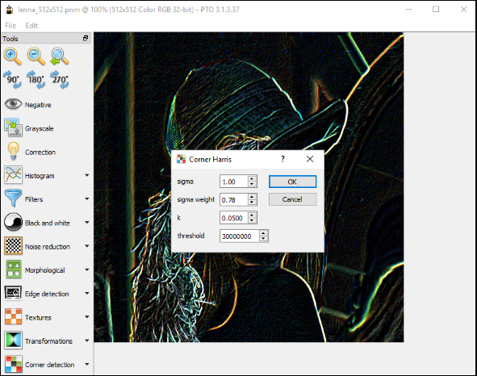

This program is a student template of a project for Image processing course. During 15 laboratories the students have to program a mini-GIMP application.
The code is written in C++ which uses Qt library; tested 5.1.1 version, should compile and run on Windows (MinGW or MSVC), Linux and MacOS. The code may be completed in Qt Creator or Visual Studio. The program works with all Netpbm files as well as JPEG, PNG, etc.
The program has the following image processing procedures to be completed:
- negative (already done as an example),
- grayscale conversion,
- correction (brightness, contrast and gamma),
- histogram (construction, stretching and equalizing),
- convolution (with custom filter),
- blurring (uniform and Gaussian),
- binarization (manual, gradient, iterative bimodal, Otsu and Niblack),
- noise reduction (median and bilateral),
- morphology (structural elements, dilation, erosion, opening and closing),
- edge detection (Roberts, Prewitt, Sobel, Laplacian with zero-crossing and Canny),
- procedural textures (height map, normal mapping, horizon mapping and Perlin noise),
- lines and rectangles detection (Hough),
- corners detection (Harris),
- segmentation (watershed).
The completed version of the project is stored on the different private repository. It is stored for lecturer's as a helpfull tool to assess students' solutions. If you need it, please send me an e-mail.
Screenshots
The following screenshots regards to completed version of the program:

Documentation
The project consists of 3 folders:
-
images - contains images saved in
pnmformat, - res - here are icons for the program,
- src - main sources.
In sources you can find two modules:
- core - files concering loading and saving images and transofmations,
- gui - everything related to a graphic user interface.
Writing solutions means completing the .cpp files in a directory src/core/transformations/ and a file src/core/histogram.cpp.
A hint that something needs to be implement is:
qDebug() << Q_FUNC_INFO << "Not implemented yet!";Debugging
If you like debugging by printing values of variables you just need to use qDebug() in the following way:
qDebug() << "width =" << image->width();PNM class
Main class to handle an image is PNM which inherits QImage. Main methods are:
- pixel(...) - getting a value of a given pixel of an image,
- setPixel(...) - saving in the image given value of a pixel,
- format() - getting a format of the image.
We are interested only in three formats of images:
- QImage::Format_Mono - black and white,
- QImage::Format_Indexed8 - grayscale,
- QImage::Format_RGB32 - 3-channels color.
To get a value of a pixel from a desired channel some functions from QColor will be helpful:
- qRed(...),
- qGreen(...),
- qBlue(...),
- qGray(...).
An example is in src/core/transformations/negative_image.cpp
Automatic loading of an image
If you setup a working directory on a folder images then when you run the program you should see on the screen lenna_512x512.pnm.
More information you will find at the top of src/gui/mainwindow.h.
During compilation you might find useful automatic launching of a transformation.
Signals
Some of next transformations may perform a bit longer so it will be OK to display some auxiliary messages. You may achieve it by so-called signals:
- message(QString),
- progress(int).
Example:
emit message("Edge detection...");or
emit progress(100*x/double(image->width()));Mixing transformations
Some of transformations need using others. In transformations you must use transform() method, i.e.:
PNM* grayImage = ConversionGrayscale(image).transform();Most of the transformations use parameters (constants, sigmas, regions etc.). It's done by methods:
- setParameter(...),
- getParameter(...).
An exemplar use is in a file src/core/tools.cpp or src/core/transformations/edge_canny.cpp
In order to display messages or progress of used transformation you must put in its construction an instance of ImageViewer, i.e.:
emit message("Blurring...");
BlurGaussian blurTrans(grayImage, getSupervisor());
blurTrans.setParameter("size", 3);
blurTrans.setParameter("sigma", 1.6);
PNM* blurredImage = blurTrans.transform();Please remember to delete redundant variables before you return a result, i.e.:
delete grayImage;
return newImage;Possible performance increase
- resign from
src/core/matrix.hand work directly on arrays, - avoid
QImage::pixel(...)andQImage::setPixel(...)and work directly on arrays given byQImage::bits()
Programming in Visual Studio 2012 with Image Watch extenstion
There is Visual Studio Add-in for Qt5 so you don't have to use Qt Creator and what's more, debugging is far easier and faster.
Microsoft released Image Watch extension which allows to display an image during debugging.
- import the project (
QT5 > Open Qt Project File (.pro)...), - open
pnm.hfile and uncomment lines 11-13, - add to your project a path to a directory with private Qt headers (in Solution Explorer
Properties > Configuration Properties > C/C++ > General > Additional Include Directories):- this can be for example
C:\software\qt\5.1.1\msvc2012\include\QtGui\5.1.1.
- this can be for example
- to your directory
Documents\Visual Studio 2012\Visualizerscopysrc\core\pnm.natvis, - install Image Watch extension (
Tools > Extensions and Updates...and in Online search Image Watch).
Effects you can check on the negative operation. During debugging you have to display Image Watch window (View > Other Windows > Image Watch) and when the debugger reaches breakpoints you can watch any PNM-type variable (with the exception of binary images! but you can handle this by conversion to a grayscale). When you click on a variable you must also tick 4-Channel Ignore Alpha.
Credits
Co-author of the project is Krzysztof Szarzyński.